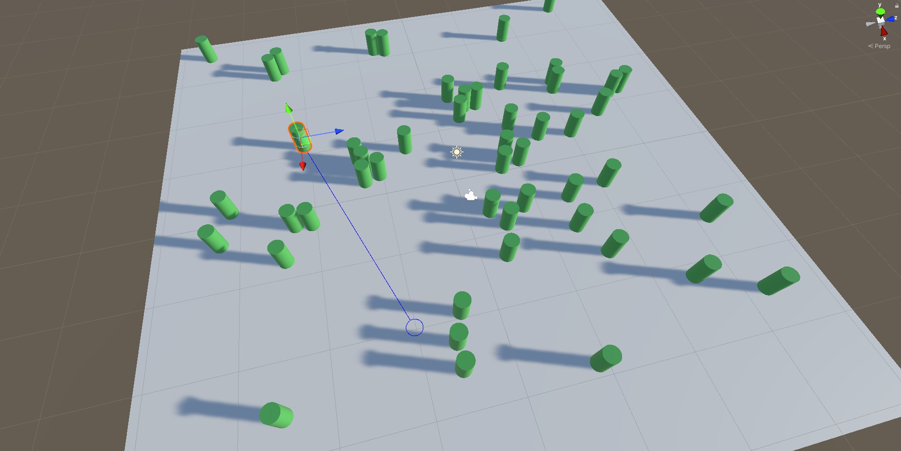
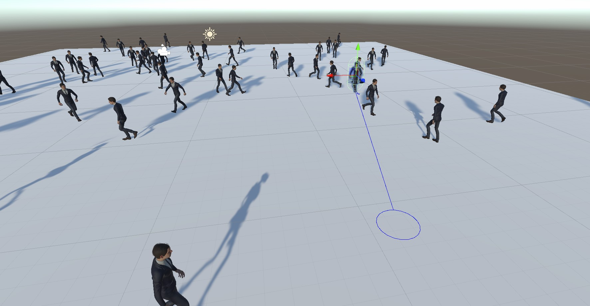
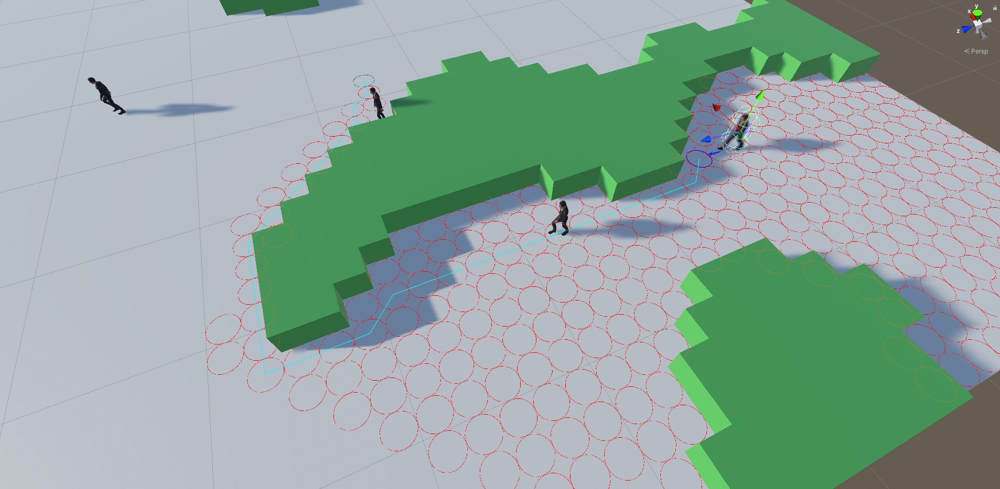
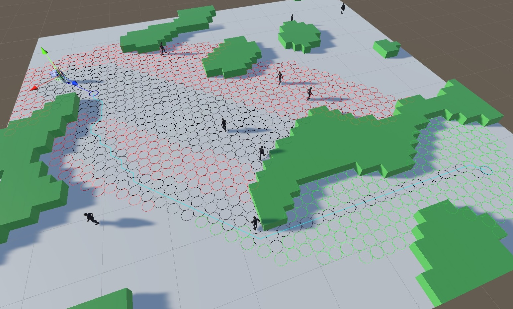
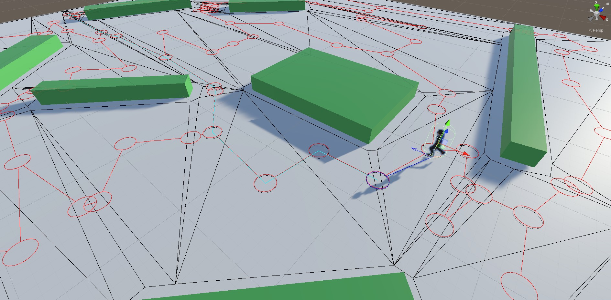
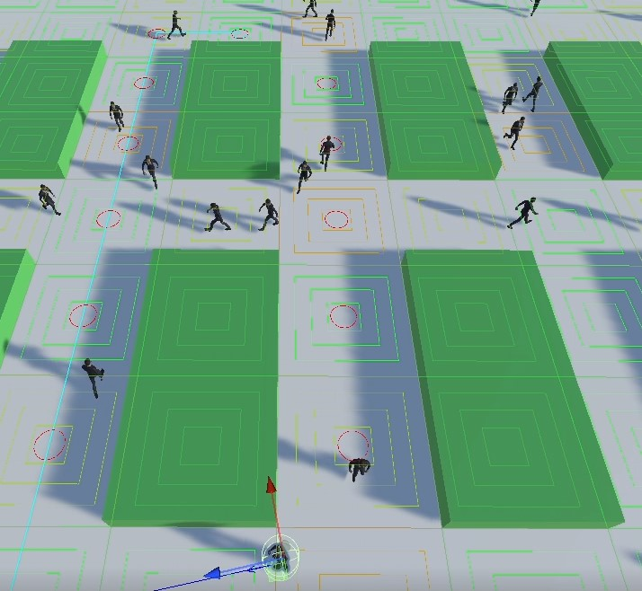
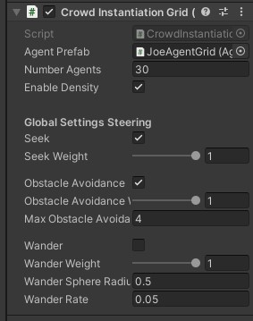
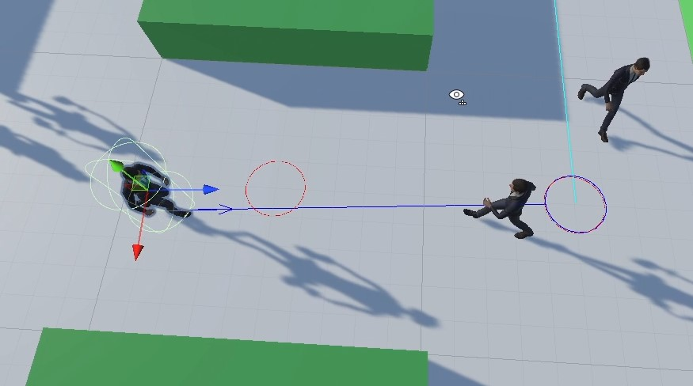
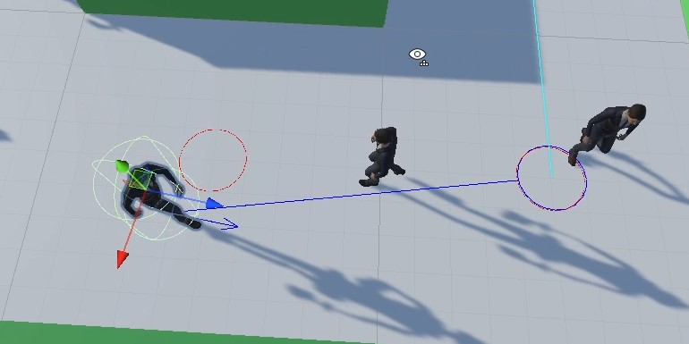

Crowd Simulation
Crowd simulation project. Implementation of common algorithms such as A* and Bidirectional A*. Grid and triangular navigation meshes. Density cells. Steering behaviors.
Introduction
This project was developed for a Master’s course (Computer Animation). Here, I copy the deliverable. Although the project is developed in Unity, the built-in navigation methods are not used, we only used Unity for rendering, animations and physics.
Exercise 1 - Collision detection and avoidance between agents
For this exercise, there are two scenes, we first start with Exercise2_1_Cylinders. In the GameObject CrowdManager, there are the three main components for this exercise:
- Crowd Instantiation: Spawns a certain number of agents (50 by default) in the specified rectangle (click CrowdManager to visualize the Gizmos). It keeps track of the initial position of all agents to avoid overlapping. It also stores the array of Agents used in other components.
- Crowd Simulator: Defines the simulation timestep (1 second by default) and triggers the OnSimulationUpdated event accordingly. Other components may subscribe to this event to update according to the simulation.
- Path Manager: At each simulation update assign new goals to those agents that reached their destination.
Each cylinder contains an AgentBehaviour component responsible for moving the agent according to a specified goal or path (this component is used across all exercises). It uses forces and velocities, and therefore it uses the FixedUpdate callback.
All agents are instantiated under the CrowdManager GameObject, and selecting each one independently will visualize its goal with a blue line and circle.

In the Exercise2_2_Humanoids scene, the same simulation is repeated but using Joe.

Exercise 2 - Pathfinding
For this exercise, there are four scenes, we will start with Exercise3_1_AStar. The structure of the scene is similar to Exercise 1. Now, the GameObject Map (select to visualize the grid) contains a script MapGenerator that generates a grid used in the pathfinding algorithms. It also generates obstacles using Perlin Noise. The CrowdManager GameObject contains the same scripts as before but updated to work with grids.
In this first scene, agents use A* to compute a path to their destination instead of moving in a straight line. All pathfinding-related scripts can be found in the Assets/Scripts/PathFinding folder. Select an agent as before to visualize the computed path and the set of opened nodes of A*.

The scene Exercise3_2_Bidirectional is similar to the previous one but uses the Bidirectional Search A* optimization. I start two A* simultaneously, executing one iteration each until they meet in a node; at this point, the paths are merged, and the algorithm is completed. For visualization purposes, I run both Bidirectional Search and standard A* (it can be disabled in the PathManagerGrid component). Therefore, when selecting an agent, we can visualize the difference between both methods: in black, those nodes opened by both methods, in green, those only opened by the Bidirectional Search, and in red, those opened only by A*.

The scene Exercise3_3_TriNavMesh contains an implementation of the previous algorithms but using Unity’s Nav Mesh instead of a uniform grid. The algorithms implementation does not change, only the type of nodes used in the graph. In this scene, I bake the Unity’s Nav Mesh using the Navigation window, as usual, then I implemented the following changes:
- CrowdInstantionNavMesh uses the nav mesh to instantiate agents inside them, it also contains methods to identify in which triangle is located each agent at any moment.
- PathManagerNavMesh creates a graph (used by A* and Bidirectional Search) from the information provided by the Unity’s Nav Mesh (vertices and indices of triangles). Since Unity’s Nav Mesh does not have any topological information, I find neighbor triangles by checking which triangles share at least two indices. I also preprocess Unity’s vertices structure and group some duplicated vertices.
When selecting the CrowdManager GameObject, all triangles can be visualized in black, and the graph built by the PathManagerNavMesh component in red

Lastly, the scene Exercise3_4_Density uses a grid again. But this time, the cells are bigger so that several characters can fit in the same cell. The only difference in this scene is that I update the graph, used by the pathfinding algorithms, with the density information every few frames. Then, rerun the pathfinding algorithm for each agent to determine if there is a better path avoiding other characters. In the following image, we can see a concentration of characters and how the agent decides to change the path.

Exercise 3 - Steering
For this exercise, there are two scenes. In the first scene, Exercise4_1_ObstacleAvoidance, I implemented the Obstacle Avoidance steering behavior. The seek towards waypoints behavior I already implemented for the last exercises. All steering can be controlled using the CrowdInstantationGrid component located in the CrowdManager GameObject.

For Obstacle Avoidance, each agent casts a sphere along a ray facing its forward direction, the length of this ray depends on the agent’s velocity. Once this ray intersects with an agent, I search the perpendicular vector to apply a force to avoid the other agent. I also consider the facing direction of the other avatar to use the opposite perpendicular vector if they coincide. In the following images, we can see how an agent corrects its trajectory to avoid another agent.


In the following scene, Exercise4_2_Wander, I implemented the wander steering behavior explained in the slides. I constrain the steering force to the surface of a sphere located towards the facing direction of the agent. The behavior can be controlled by modifying the sphere’s radius and changing the wander rate.